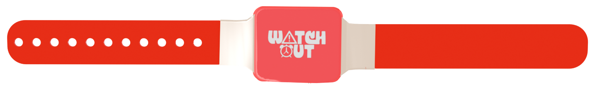
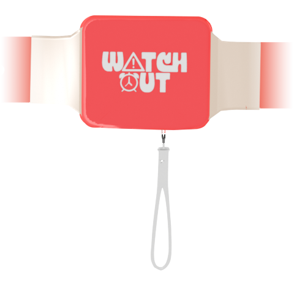
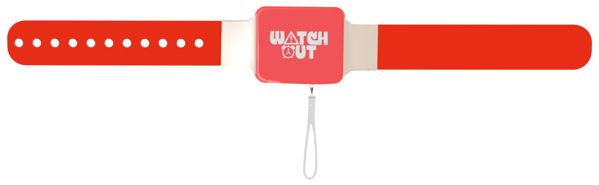

Alarm darurat
Fitur paling penting di WatchOut! Cukup tarik talinya, tanpa perlu mencari tombol kecil atau membuka ponsel. Suaranya terdengar hingga sekitar 200 meter.
WatchOut! adalah jam digital dengan tali alarm darurat untuk lansia. Saat terjatuh atau dalam bahaya, cukup tarik talinya. Suara kencang terdengar hingga ±200 meter dan memanggil orang di sekitar.

Coba tarik talinya Alarm berbunyi!
Geser tali ke bawah untuk mendengar bunyi alarmnya. Orang di sekitar hingga ±200 meter dapat mendengarnya.
Banyak lansia beraktivitas sendiri: di rumah, di kebun, atau saat berjalan ke warung. Ketika terjatuh atau merasa terancam, mengambil ponsel lalu menelepon bisa terasa sulit. WatchOut! selalu ada di pergelangan tangan, jadi meminta tolong cukup dengan satu tarikan.
Tali menggantung di sisi jam, mudah diraih dengan tangan yang lain.
Suara keras terdengar hingga sekitar 200 meter dan menarik perhatian orang di sekitar.
Tetangga, keluarga, atau orang yang lewat tahu ada yang butuh pertolongan.
Fitur paling penting di WatchOut! Cukup tarik talinya, tanpa perlu mencari tombol kecil atau membuka ponsel. Suaranya terdengar hingga sekitar 200 meter.

Tidak perlu dilepas saat cuci tangan, wudu, atau kehujanan.
Desainnya sederhana dan ringan, nyaman dipakai dari pagi sampai malam.
Geser model untuk memutarnya. Layar jam menampilkan waktu saat ini.

Tampilan 3D belum bisa dimuat di perangkat ini, jadi kami tampilkan gambar produknya.
Pilih sudut pandang untuk melihat bagian-bagian penting jam ini.
Selain alarm darurat, WatchOut! membantu kegiatan sehari-hari. Pilih fitur untuk melihat tampilannya di layar jam.
09:41
Senin, 16 November
29°
Cerah berawan
Sedang diputar
Lagu kenangan
Mencari ponsel…
Ponsel Anda sedang berdering
06:30
Minum obat pagi
Jam digital dengan angka besar, lengkap dengan hari dan tanggal.
Tarik tali yang menggantung di sisi jam. Alarm langsung berbunyi kencang untuk menarik perhatian orang di sekitar.
Suara alarm dapat terdengar hingga sekitar 200 meter. Jarak sebenarnya bisa berbeda, tergantung kondisi sekitar seperti keramaian atau dinding bangunan.
Ya. WatchOut! tahan air, jadi tidak perlu dilepas saat cuci tangan, wudu, atau kehujanan.
Bisa. Desainnya ringan dan ramah lansia. Selain alarm darurat, ada fitur harian seperti jam digital, cuaca, kontrol musik, find phone, navigasi, dan alarm.
Untuk lansia, terutama yang sering beraktivitas sendiri, dan untuk keluarga yang ingin orang tuanya bisa meminta tolong dengan cepat.
Kirim pesan lewat formulir di bawah atau hubungi kami di WhatsApp. Tim kami akan membantu menjawab pertanyaan Anda.
Tinggalkan pesan, kami akan membalas lewat WhatsApp.